คู่มือโหมดของหน้าต่าง Neural Trader: แต่ละโหมดมีอะไร และอ่านอย่างไร
หน้าต่าง visual มีสองเมนูหลักที่ทำงานคนละแกน: mode เลือกว่าจะแสดงอะไรและใช้ CPU เท่าไร (Lite / Cinematic / Dashboard / Monitor) ส่วน look เลือกหน้าตาของภาพ 3D (analysis / showcase) ภาพทั้งหมดในหน้านี้จับจากหน้าต่างจริงของ run rl_prod_v1 (USDJPY H4, window 40, eval ที่ 12 / step 120,000) เมื่อ 2026-10-20
เลือกโหมดแล้วดูหน้าจอจริง พร้อมหมายเลขกำกับแต่ละส่วน
| mode | แสดงอะไร | วาด 3D | CPU โดยประมาณ (1 core) | เหมาะกับ |
|---|---|---|---|---|
| Lite | ภาพ 3D แบบประหยัด: ไม่มีแสงเรือง, เส้นเชื่อม 4 เส้น/node, ไม่มี pulse, ความละเอียด 1×, 20 fps | ใช่ | 20–40% | เปิดดูระหว่างเทรนโดยไม่กินเครื่อง |
| Cinematic | ภาพ 3D เต็ม: แสงเรือง (bloom), เส้นเชื่อม 8 เส้น, pulse วิ่งตามเส้น, ความละเอียด 2×, 30 fps | ใช่ | 60% ขึ้นไป | ดูให้สวย / อัดคลิป |
| Dashboard | แผงกราฟนิ่ง 6 การ์ด + KPI 8 ช่อง วาดใหม่เฉพาะเมื่อมี snapshot ใหม่ | ไม่ | 1–2% | ดูผล eval ย้อนหลังทั้งหมด |
| Monitor | แผง verdict ตอบว่า "หยุดหรือเทรนต่อ" + การ์ดวิเคราะห์ 17 การ์ด (ค่าเริ่มต้นของแอป) | ไม่ | 1–2% | เปิดทิ้งไว้ระหว่างเทรน |
look มีผลเฉพาะ Lite และ Cinematic: analysis = ข้อมูลครบ (สีเส้นบอกทิศ, แผง TOP DRIVERS, layer แบ่งกลุ่มตาม action) · showcase = ภาพสะอาดสำหรับโชว์ (ธีมมืด, คอลัมน์จุด, กล้องมองตรง, เส้นสีเดียว 16 เส้น, ซ่อนแผงวิเคราะห์) เปลี่ยน look แล้วหน้าจะโหลดใหม่ เพราะธีมกับการจัดวางถูกกำหนดตอนเปิด
ภาพ 3D: เล่นซ้ำการตัดสินใจของโมเดลทีละแท่ง
สองโหมดนี้คือภาพเดียวกัน ต่างกันแค่คุณภาพการวาด สิ่งที่เห็นคือ "replay": เดินข้อมูลทีละแท่ง แล้วแสดงว่า ณ แท่งนั้น input เป็นอะไร neuron ตัวไหนติด และโมเดลเลือก action อะไร ตัวเลขทุกตัวมาจาก snapshot ที่บันทึกตอน eval (ทุก 10,000 step) หรือจาก rollout ล่าสุดระหว่างเทรน
แผงมุมขวาบน: สถานะ ณ แท่งปัจจุบัน
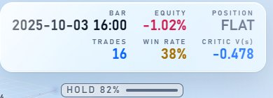
- BAR
- วันเวลาของแท่งที่กำลังเล่นอยู่
- EQUITY
- กำไรสะสม % ตั้งแต่แท่งแรกของ replay ถึงแท่งนี้ (replay มี 300 แท่ง ไม่ใช่ทั้งช่วง Validation)
- POSITION
- LONG / SHORT / FLAT ที่โมเดลถืออยู่
- TRADES · WIN RATE
- จำนวนไม้ที่ปิดแล้วใน replay และสัดส่วนที่กำไร
- CRITIC V(s)
- มูลค่าที่ critic ประเมินให้สถานะปัจจุบัน บวก = คาดว่าจะได้ reward ต่อจากนี้
ชั้น INPUT · 40 BARS × 182 FEATURES
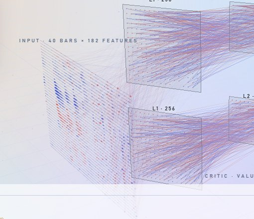
บวกอีก 3 จุดคือ position / unrealized pnl / bars in position เมนู inputs เลือกวิธีลงสี:
- attribution (ค่าเริ่มต้น) สีตามว่า input นั้นดันการตัดสินใจ "ของแท่งนี้" ไปทางไหน (ส้ม +, ฟ้า −) คำนวณจาก gradient × input ของ action ที่เลือก
- usage (decision test) สีม่วงตามว่าถ้าสลับค่า feature นั้นแล้วการตัดสินใจเปลี่ยนกี่ % เป็นผลทดสอบคงที่ต่อ eval
- activation ค่า input ที่ normalize แล้วตรงๆ
Tower ACTOR และ CRITIC
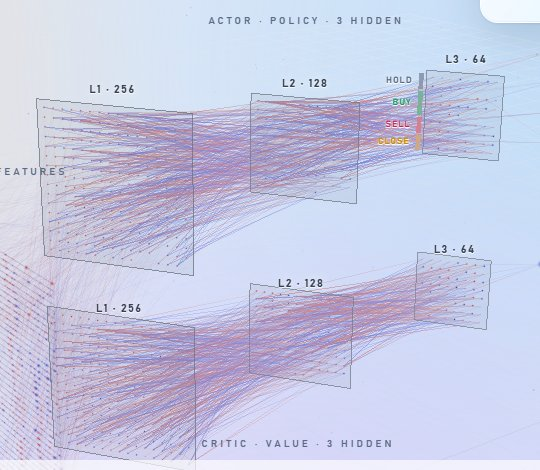
แต่ละฝั่งคือ network คนละตัวที่มีขนาดชั้นเท่ากัน ป้าย L1 · 256 บอกลำดับและจำนวน neuron จริง จุด = neuron สีตาม activation ณ แท่งนั้น (ส้ม +, ฟ้า −, สว่าง = แรง)
เมนู layers เลือกรูปทรง: sorted (ค่าเริ่มต้น: layer สุดท้ายของ actor แบ่งกลุ่มตาม action ที่ neuron ส่งน้ำหนักไปมากที่สุด มีแถบสีและป้าย HOLD/BUY/SELL/CLOSE ข้างกล่อง ชั้นอื่นเรียงจากทำงานมากไปน้อย), grid, column, disc
เส้นเชื่อมคือ ตัวอย่าง เท่านั้น: วาดเฉพาะเส้นที่แรงที่สุด 4 / 8 / 16 เส้นต่อ neuron (เมนู synapses) ของจริงมีหลายแสนเส้น สีส้ม = สัญญาณบวก ฟ้า = ลบ
ฝั่งขวา: OUTPUT และ V(s)
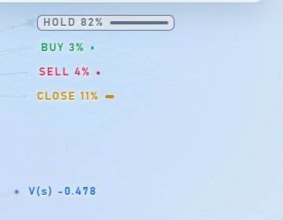
ป้าย HOLD / BUY / SELL / CLOSE พร้อม % คือความน่าจะเป็นที่ policy ให้แต่ละ action ณ แท่งนั้น action ที่สูงสุดมีกรอบล้อม (ใน eval replay คือ action ที่ทำจริง) ป้าย V(s) คือค่าเดียวกับ CRITIC V(s) ในแผงสถิติ
แผง TOP DRIVERS (ซ้าย, เฉพาะ look analysis)
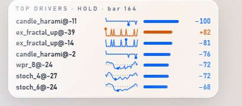
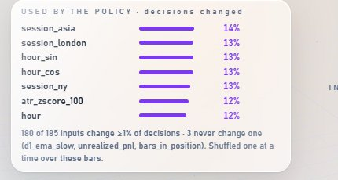
แต่ละแถวมี sparkline ของ feature นั้นตลอด window (จุด = lag ที่ input ตัวนั้นอ้างถึง เส้นประ = ศูนย์), แถบความแรง และตัวเลข + / − (−100 = ดันแรงสุดไปทางลบ)
กราฟแท่งเทียน (ล่าง)
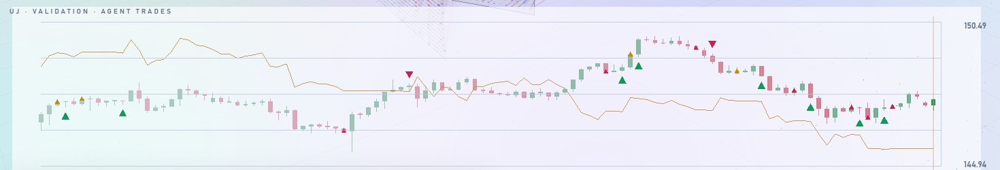
แถบ timeline (ล่างซ้าย)
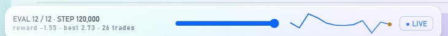
แถบควบคุม (ล่างขวา)
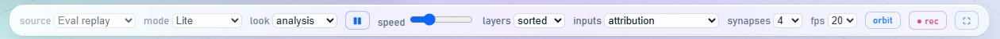
| ปุ่ม | ทำอะไร |
|---|---|
| source | Training (live) / Eval replay (มีเฉพาะตอนเปิดจาก run ที่มี rollout) |
| mode | Lite / Cinematic / Dashboard / Monitor เปลี่ยนได้ทันที |
| look | analysis / showcase (โหลดหน้าใหม่) |
| ❚❚ / ▶ · speed | หยุด-เล่น replay และความเร็ว |
| inputs | attribution / usage / activation (วิธีลงสีชั้น input) |
| layers | sorted / grid / column / disc (รูปทรง hidden layer) |
| synapses | 4 / 8 / 16 เส้นต่อ neuron |
| glow | ความแรงของแสงเรือง (เฉพาะธีมมืด) |
| fps | เพดานเฟรมต่อวินาที |
| orbit | เปิด/ปิดกล้องแกว่งอัตโนมัติ (ลากเมาส์หมุนเองได้เสมอ) |
| ● rec | บันทึกวิดีโอหน้าจอของหน้าต่างนี้ |
| ⛶ | เต็มจอ |
มุมมอง "Training (live)" ระหว่างเทรน
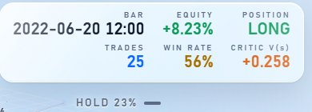
เมนู source สลับได้ระหว่าง Eval replay (policy แบบ greedy บนชุด Validation) กับ Training (live) = rollout ล่าสุดบนชุด Train ที่ policy ยังสุ่มลองอยู่ มุมมองนี้เพิ่ม: จุดบนกราฟตรงแท่งที่ action ที่สุ่มได้ต่างจาก greedy, แถบ advantage ใต้กราฟ, และแผง REWARD / ADVANTAGE / SAMPLED · GREEDY
หัวกราฟบอก ROLLOUT #60 · STEP 122,880 (60 คือลำดับภาพที่บันทึก ไม่ใช่จำนวนรอบ PPO จริง) rollout ใหม่จะรอให้ replay ปัจจุบันเล่นจบก่อน
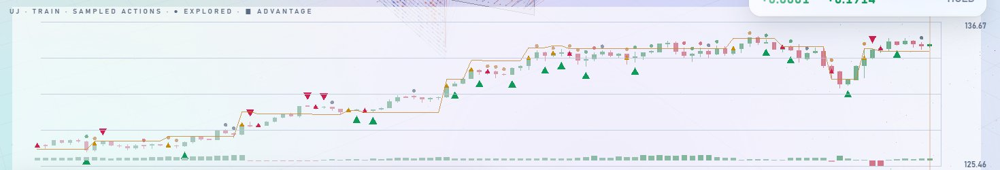
พฤติกรรมประหยัดเครื่อง
หน้าต่าง live เล่น snapshot แต่ละอันหนึ่งรอบแล้ว "หลับ" (ข้อความ 💤 IDLE) จน eval ถัดไปมาถึงหรือขยับเมาส์ ย่อหน้าต่างไว้ก็หยุดวาด และหยุดหลังกด pause ไว้ 8 วินาที
analysis กับ showcase: ภาพเดียวกัน คนละงาน
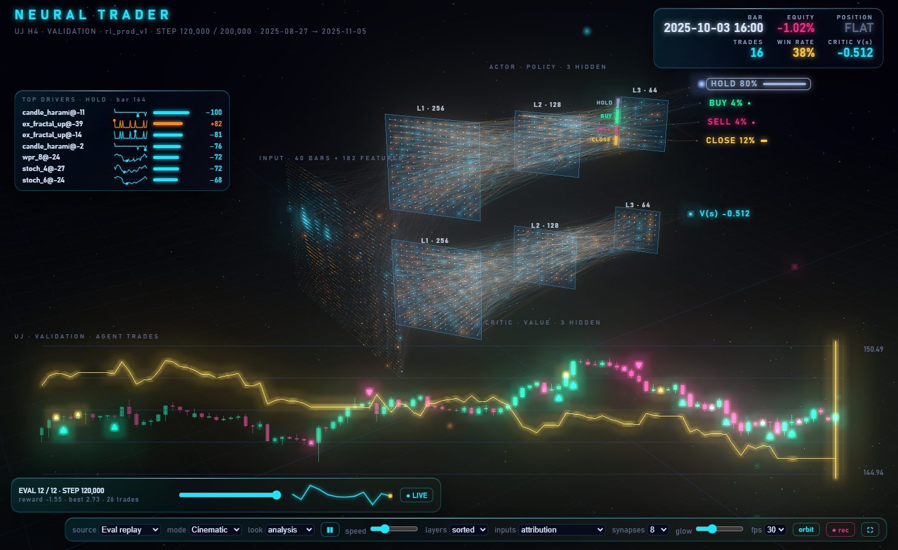
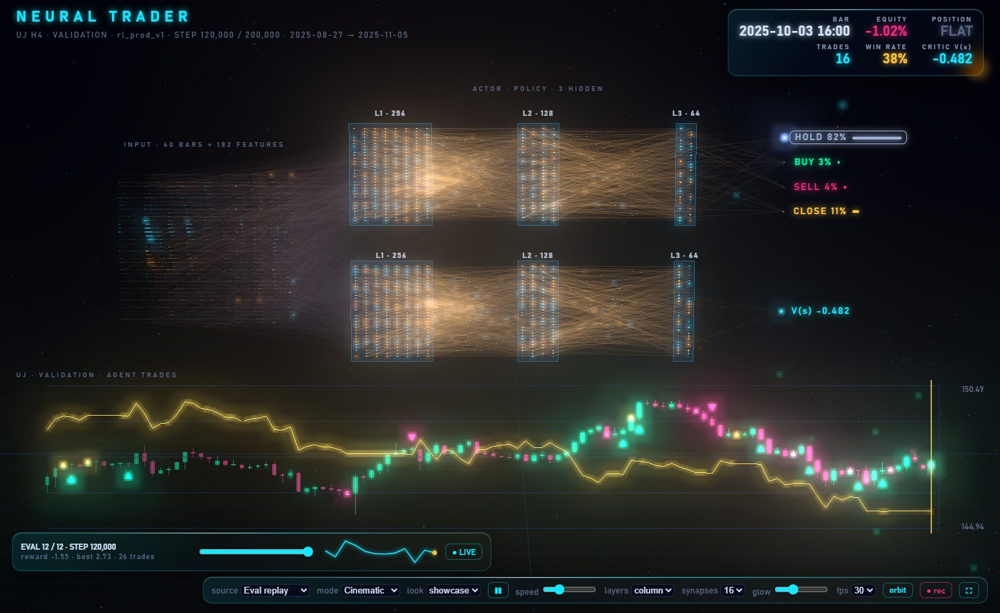
| analysis | showcase | |
|---|---|---|
| ธีม | ตามที่ตั้งในแอป (Clear Liquid สว่าง / Deep Glass มืด) | บังคับมืดเสมอ |
| มุมกล้อง | เฉียงจากหน้าซ้าย เห็นชั้น input เป็นตาราง | มองตรงจากด้านหน้า เรียงซ้ายไปขวาแบบรูปในตำรา ชั้น input กางเป็นตารางหน้า tower |
| hidden layer | sorted (แบ่งกลุ่มตาม action) | คอลัมน์จุด |
| สีเส้นเชื่อม | ส้ม = บวก, ฟ้า = ลบ | ส้มสีเดียว (ทิ้งข้อมูลทิศทางโดยตั้งใจ) |
| จำนวนเส้น | ตาม mode (4 / 8) | 16 |
| TOP DRIVERS · ป้ายกลุ่ม action | มี | ซ่อน |
| กล้องแกว่ง | ปานกลาง | แพนช้า |
| ใช้เมื่อ | อยากรู้ว่าโมเดลใช้อะไรตัดสินใจ | อัดคลิป / ขึ้นจอโชว์ |
ในแอป เมนูข้างปุ่ม Open Visual มีตัวเลือก "Showcase (for clips)" = Cinematic + showcase ในคลิกเดียว
แผงผล eval ทุกครั้ง ไม่วาด 3D
ใช้ข้อมูลจาก eval replay (ชุด Validation, policy แบบ greedy) อ่านจากสรุปของทุก eval ใน index.json จึงเบามาก วาดใหม่เฉพาะเมื่อ eval ใหม่มาถึง
KPI 8 ช่อง (ของ eval ที่เลือก)
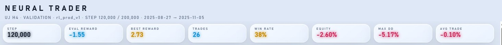
- STEP
- step ที่ eval นั้นเกิด
- EVAL REWARD · BEST REWARD
- reward รวมของ eval นี้ และค่าดีที่สุดที่เคยได้
- EQUITY · MAX DD
- equity ปลาย replay และ drawdown ลึกสุด
- TRADES · WIN RATE · AVG TRADE
- จำนวนไม้ อัตราชนะ และกำไรเฉลี่ยต่อไม้
การ์ด 6 ใบ
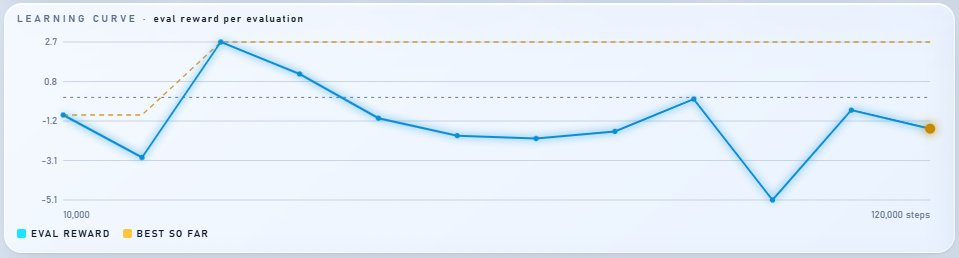
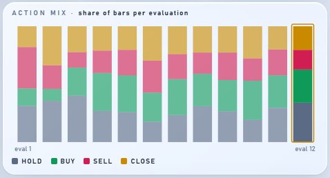
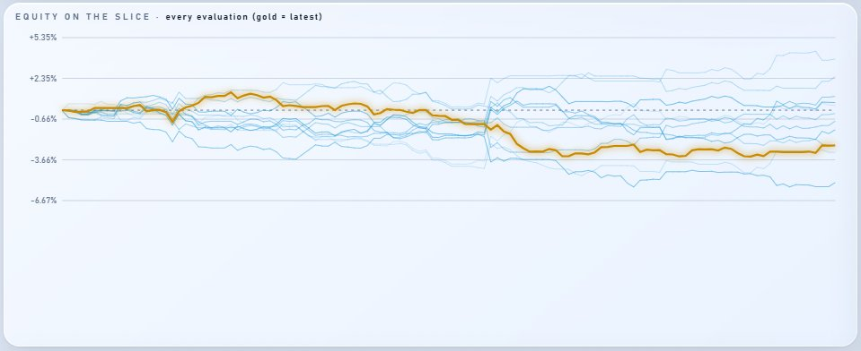
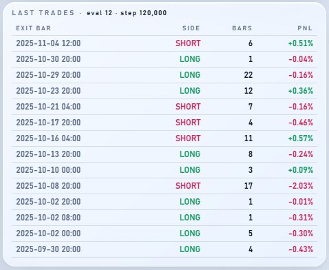
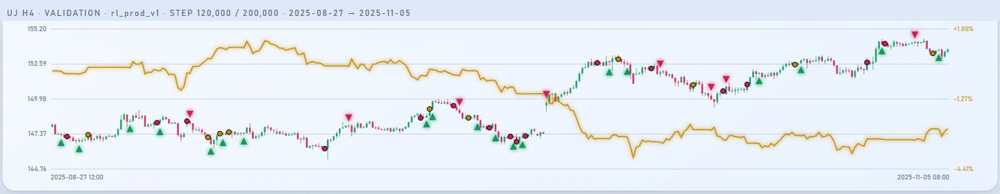
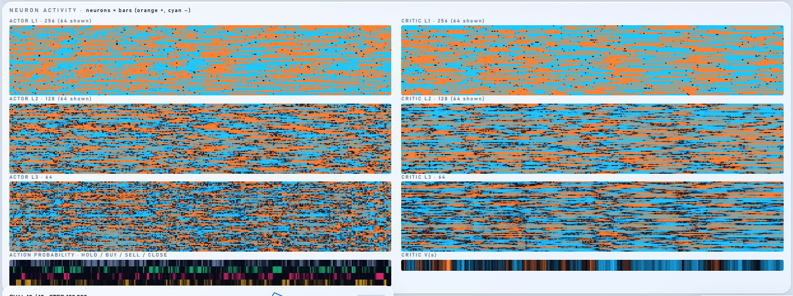
ตอบคำถามเดียว: หยุดหรือเทรนต่อ?
ทุกตัวเลขมาจากไฟล์ที่ตัวเทรนเขียนเองหลัง "ทุก" rollout (monitor.json) และหลังทุก eval (index.json, stability.json, episodes.json) ทุก verdict แสดงตัวเลขและเกณฑ์ที่ใช้ตัดสินไว้ในชิป ไม่มีกล่องดำ
การ์ด VERDICTS (รวม 20 rollout ล่าสุด)
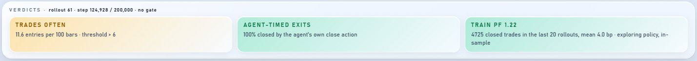
| คำถาม | ชิปที่เป็นไปได้ | เกณฑ์ |
|---|---|---|
| ใช้สัญญาณ (entry gate) ไหม | FILTERS THE SIGNAL TAKES ALMOST NOTHING NO FILTERING NO SIGNAL BARS YET | รับสัญญาณ < 5% = แทบไม่เทรด · > 90% = gate ตัดสินแทนทั้งหมด (เฉพาะ run ที่มี gate) |
| เทรดถี่เกินไปไหม | TRADE FREQUENCY OK TRADES OFTEN OVER-TRADING | > 6 ไม้ต่อ 100 แท่ง = ถี่ · ถี่และถือเฉลี่ย < 4 แท่ง = over-trading |
| ใครเป็นคนปิดไม้ | AGENT-TIMED EXITS EXITS BY TIMEOUT EXITS BY STOP | > 50% ปิดเพราะครบ max_hold = โมเดลไม่ได้ตัดสินใจออก · > 60% โดน stop |
| เลือกสัญญาณเก่งไหม | SELECTION HELPS SELECTION HURTS SELECTION ≈ RANDOM SELECTION: COLLECTING | เทียบกฎคงที่ (เข้าทุกสัญญาณ ออกหลัง 4 แท่ง) บนแท่งที่โมเดล "รับ" กับที่ "ข้าม" ต่างกัน > ±2 bp ต้องมีอย่างละ ≥ 30 แท่ง |
| จังหวะออกดีกว่ากฎไหม | EXIT TIMING ADDS EXIT TIMING LOSES EXIT TIMING ≈ RULE | pnl จริงของโมเดล เทียบกฎคงที่บนไม้เดียวกัน ต่างกัน > ±2 bp ต้อง ≥ 30 ไม้ |
| ยังสำรวจอยู่ไหม | EXPLORATION COLLAPSED EARLY STILL NEAR-RANDOM | entropy < 0.25 nats ก่อน 30% ของการเทรน = ล้มเร็ว · entropy > 85% ของค่าสูงสุดหลัง 70% = ยังสุ่ม |
| มีกำไรบนชุด Train ไหม | TRAIN PF x.xx TRAIN PF x.xx TRAIN PF x.xx | > 1.2 เขียว · < 0.9 แดง (in-sample และยังสุ่มอยู่ จึงเป็นขอบล่าง) |
verdict เรื่องการเลือกสัญญาณและจังหวะออกพลิกได้ในช่วงแรก (เคยเห็น "helps" ที่ 6 rollout กลายเป็น "random" ที่ 13) อ่านหลังมีข้อมูลครบเกณฑ์เท่านั้น
TRAIN vs VALIDATION (หลังทุก eval)
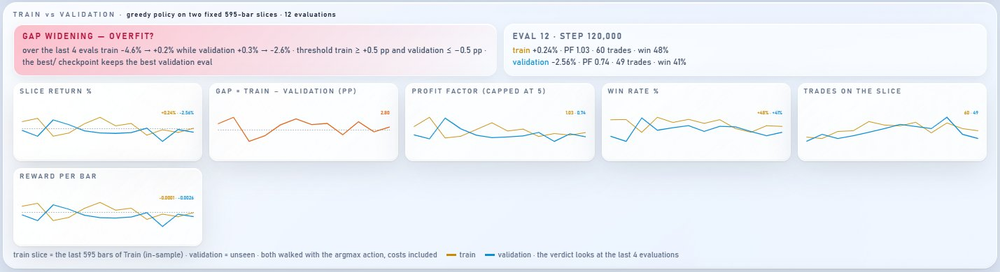
เดิน policy แบบ greedy บน 2 ช่วงที่ยาวเท่ากันและคงที่ (run นี้ 595 แท่ง): ท้ายชุด Train (in-sample) กับชุด Validation (ไม่เคยเห็น) ชิปสรุปจาก 4 eval ล่าสุด: GAP WIDENING — OVERFIT? (Train ขึ้น ≥ 0.5 pp และ Validation ลง ≥ 0.5 pp) · GENERALISING (Validation ขึ้น) · VALIDATION PEAKED AT EVAL k (ดีสุดผ่านไปแล้ว ≥ 3 eval) · MEMORISING (ห่างกัน ≥ 5 pp และ Validation ≤ 0) · NO CLEAR TREND
DECISION STABILITY
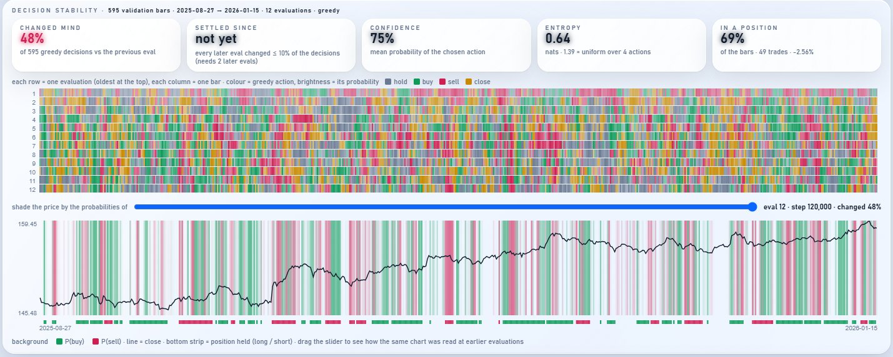
- CHANGED MIND
- % การตัดสินใจ (greedy) ที่ต่างจาก eval ก่อนหน้า บนแท่ง Validation ชุดเดิม
- SETTLED SINCE
- eval ที่หลังจากนั้นทุก eval เปลี่ยนไม่เกิน 10% (ต้องมีอีก 2 eval ยืนยัน)
- CONFIDENCE · ENTROPY
- ความน่าจะเป็นเฉลี่ยของ action ที่เลือก และความกระจายของความน่าจะเป็น (1.39 = สุ่มเท่ากันทั้ง 4 action)
- IN A POSITION
- สัดส่วนแท่งที่ถือไม้อยู่ พร้อมจำนวนไม้และ return บนช่วงนี้
TRAINING DATA COVERAGE
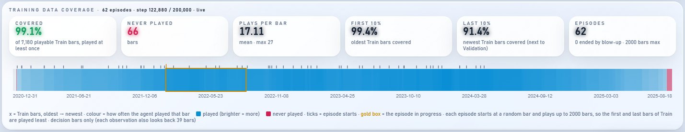
แถบข้อมูล Train เก่า→ใหม่ สีเข้ม = ถูกเล่นบ่อย แดง = ไม่เคยถูกเล่น ขีดบน = จุดเริ่มแต่ละ episode ใช้ตอบว่าตั้ง step พอหรือยัง (ช่วงต้นและท้าย Train ถูกเล่นน้อยเสมอเพราะ episode สุ่มจุดเริ่ม)
LAST 20 ROLLOUTS · pooled
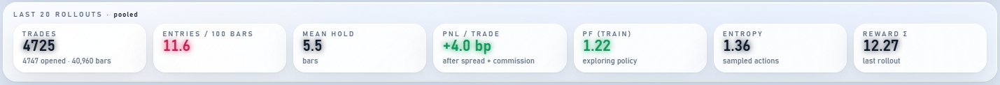
- TRADES
- ไม้ที่เปิดและปิดใน 20 rollout ล่าสุด
- ENTRIES / 100 BARS · MEAN HOLD
- ความถี่การเข้า และถือเฉลี่ยกี่แท่ง
- PNL / TRADE
- กำไรเฉลี่ยต่อไม้ (bp) หลังหัก spread และ commission
- PF (TRAIN)
- profit factor ของ policy ที่ยังสุ่มลองอยู่
- ENTROPY · REWARD Σ · ACCEPTANCE
- ความสุ่มของ action, reward รวมของ rollout ล่าสุด, สัดส่วนสัญญาณที่รับ (เฉพาะ run ที่มี gate)
COUNTERFACTUAL และ EXITS & ACTIONS
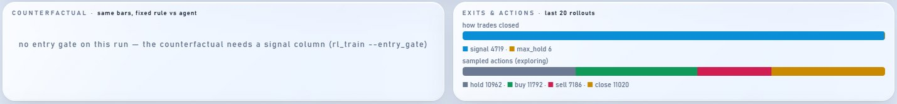
COUNTERFACTUAL: บนแท่งเดียวกัน ถ้าใช้กฎคงที่ (เข้าทุกสัญญาณ ออกหลัง 4 แท่ง ไม่มี stop) จะได้เท่าไร แยกเป็นแท่งที่โมเดลรับกับที่ข้าม เป็นฐานของ verdict เรื่องการเลือกสัญญาณ EXITS & ACTIONS: แถบสัดส่วนเหตุที่ไม้ปิด (signal / max_hold / stop / end) และสัดส่วน action ที่สุ่มได้
sparkline 6 ใบ (ต่อ rollout)
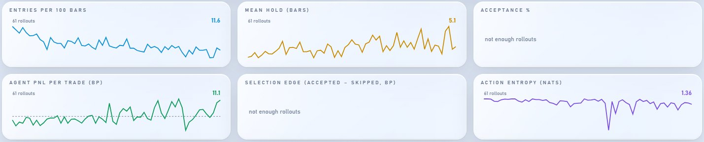
WHAT DRIVES THE DECISIONS และ WHICH BARS OF THE WINDOW MATTER
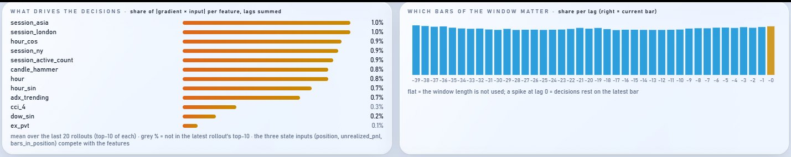
ซ้าย: feature ที่มีส่วนแบ่ง |gradient × input| มากสุด (รวมทุก lag) เฉลี่ยจาก 20 rollout ล่าสุด เทา = ไม่ติด top-10 ของ rollout ล่าสุด ขวา: ส่วนแบ่งต่อ lag ของ window ถ้าแบนทุกแถบ = โมเดลไม่ได้ใช้ประโยชน์จากความยาว window ถ้าพุ่งที่ lag 0 = ตัดสินใจจากแท่งล่าสุด
BEHAVIOUR OVER TRAINING · TRAINING ROLLOUTS · EVALUATIONS
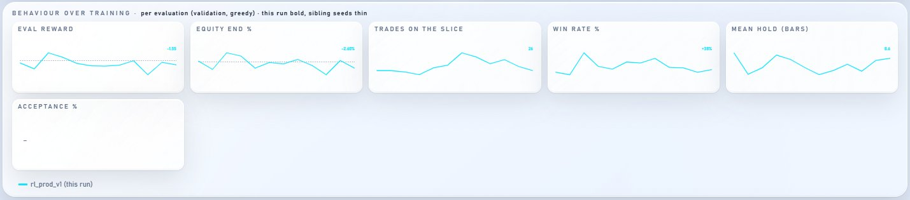
_s<seed> จะซ้อนเป็นเส้นบาง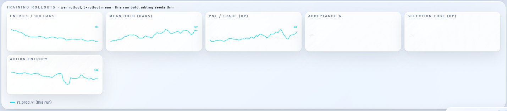
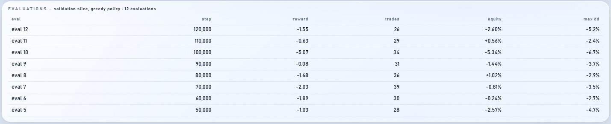
ทางลัดในการเลือก
กำลังเทรนและอยากรู้ว่าควรหยุดไหม → Monitor (ค่าเริ่มต้น) ดูชิป VERDICTS กับการ์ด TRAIN vs VALIDATION
อยากเห็นว่าโมเดล "คิด" อะไรที่แท่งหนึ่ง → Lite + analysis ชี้ TOP DRIVERS และสีชั้น input
อยากดูผลทุก eval แบบรวดเดียว → Dashboard (EQUITY ON THE SLICE, LEARNING CURVE)
อยากอัดคลิปหรือโชว์ขึ้นจอ → Cinematic + showcase (หรือเลือก "Showcase (for clips)" ในแอป)
ทุกโหมดเล่นซ้ำบนชุด Validation ซึ่งถูกใช้เลือก best model ซ้ำๆ ตัวเลขจึงดูดีเกินจริงได้ ผลที่เชื่อได้คือ backtest บนชุด Test ในหน้า Backtest